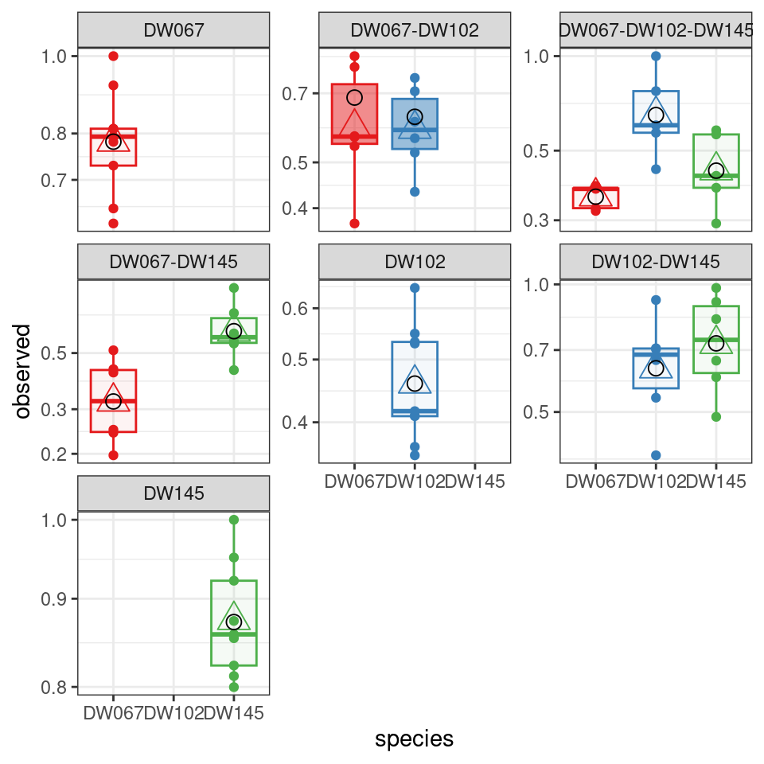
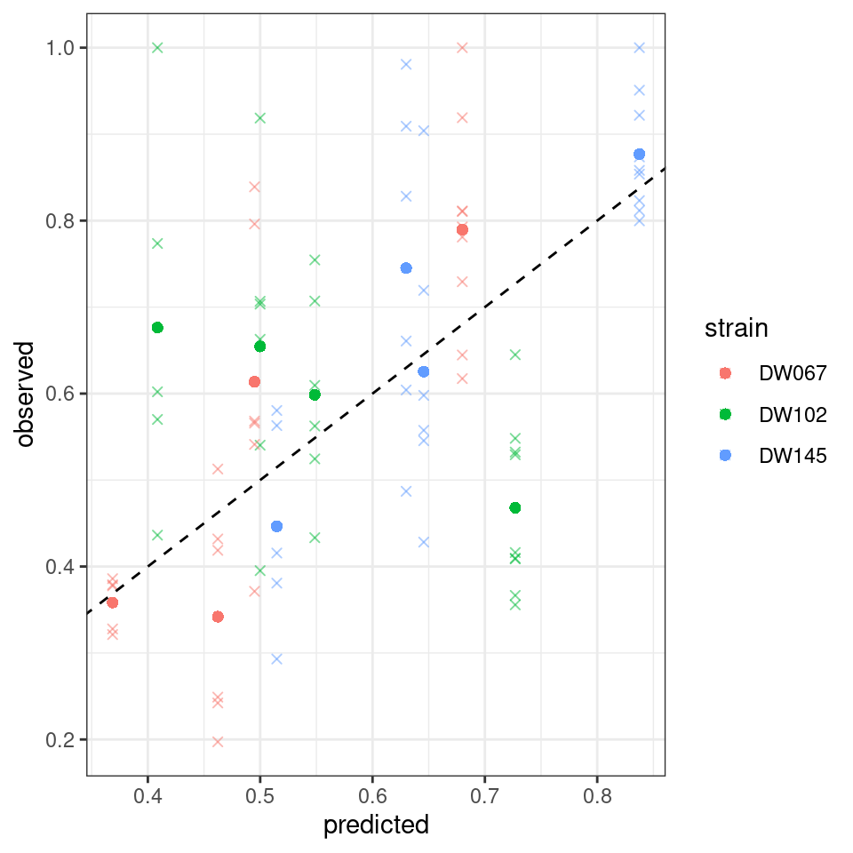

Lecture 5 Predicting coexistence in ecological communities
Lesson plan:
- We consider the problem of co-culturing several species taken from a pool in all possible combinations.
- This type of experiments has been conducted to test hypotheses on the relationship between diversity and ecosystem functioning.
- The number of combinations grows quickly with the size of the pool, making experiments difficult.
- The difficulty is compounded by the fact that not all combinations are expected to lead to coexistence.
- We parameterize a simple statistical model, and draw a connection with GLV dynamics.
- We test whether our model is able to predict the outcomes of experiments out-of-fit.
5.1 Background: Diversity and Ecosystem Functioning
Key paper: Tilman et al. (2001)
This paper present the results of the biodiversity-ecosystem functioning experiments carried out at Cedar Creek, Minnesota, by Dave Tilman and collaborators. These multi-year experiments are among the largest ever carried out in ecology, and have been hugely influential. The same type of experiments have been performed with different organisms, in the lab, and in mesocosms.
Ecologists have performed large experiments in which different assemblages of species are co-cultured. These experiments have been conducted with plants (for example, Biodiversity Ecosystem Functioning experiments e.g., Hector et al. (1999) Tilman et al. (2001), Cadotte (2013)) and in the laboratory using protozoan, algae or bacteria. Two commonly-encountered problems in this type of experiments have to to with the scaling of the number of experiments with the number of species, and with the probability of coexistence.
Scale: How many communities can we form from a pool of \(n\) species? We can culture a single species in isolation (\(n\) possibilities), two species in pair (\(n(n-1) / 2\) possibilities), and so on. The total is therefore:
\[ \sum_{j=1}^n \binom{n}{j} = 2^n -1 \]
And this is only considering the presence/absence of each species! Moreover, we might want to vary the initial conditions (e.g., starting two species at low/high abundance, equal abundance, high/low abundance), etc. Clearly, this makes trying all possible combinations unfeasible when \(n\) is large enough. For example, for 10 species we can form 1023 assemblages, while with 20 more than a million!
Coexistence: even if we could try all possible experiments, many assemblages would collapse to smaller communities because of extinctions. For example, pairs could become monocultures, triplets become pairs or monocultures, etc. As such, even if we were to try all possible combinations, we would end up observing a smaller set of “final communities”.
To guide experimentation, we need a way to be able to predict the (probable) outcome of experiments without having to run them all. Here we attempt to do so by examining a handful of experimental results, and using these data to parametrize a statistical model. The model provides a way to navigate the enormous space of possibilities, thereby suggesting “good” experiments that yield a large probability of coexistence.
5.2 Example data
For our explorations, we are going to use recent data from Ishizawa and colleagues, which you can find here:
H. Ishizawa, Y. Tashiro, D. Inoue, M. Ike, H. Futamata. Learning beyond-pairwise interactions enables the bottom–up prediction of microbial community structure PNAS 121 (7) e2312396121 (2024).
The Authors inoculated duckweed (Lemna minor) with synthetic bacterial communities formed by all possible combinations of seven strains. To this end, they cultured the infected duckweed in flasks for 10 days. At the end of the experiment, they plated the communities on agar plates containing antibiotics that would allow the growth only of a particular strain. In this way, they were able to measure the final density of each of the seven strains in each of the \(2^7 - 1 = 127\) possible communities, and conducted each experiment in replicate. The full data set reports the outcome of 692 separate experiments!
More modestly, here we are going to focus on a smaller pool of three strains taken from the seven available. We therefore have \(7\) possible communities, ranging from a single strain growing in isolation to the three strains growing together. For example, a few of the measurements are:
| DW067 | DW102 | DW145 | community | replicate |
|---|---|---|---|---|
| 0.8 | 1 | 1 | ||
| 0.812 | 1 | 2 | ||
| 0.529 | 2 | 1 | ||
| 0.356 | 2 | 2 | ||
| 0.703 | 0.909 | 3 | 1 | |
| 0.395 | 0.661 | 3 | 2 | |
| 0.386 | 0.602 | 0.563 | 4 | 1 |
| 0.379 | 0.774 | 0.293 | 4 | 2 |
We can therefore associate each measurement with a) the strain being measured, \(i\); b) the community in which \(i\) was grown, \(k\); and c) the (biological) replicate experiment, \(r\).
5.3 A simple statistical framework
The simplest model we can write for this type of data is one in which the outcomes of replicate experiments are independent samples from a distribution:
\[ \tilde{x}^{(k,r)}_i \sim Q_i\left(x^{(k)}_i, \gamma_i^{(k)}\right) \]
where \(\tilde{x}_i^{(k, r)}\) is the observed density of population \(i\) for the \(r\) replicate in which population \(i\) is grown in community \(k\). The value \(x_i^{(k)}\) represents the true mean of the distribution (i.e., the average if we were to conduct many replicates—hence it does not depend on \(r\)), and \(\gamma_i^{(k)}\) is a parameter (or several parameters) controlling the shape of the distribution \(Q_i\).
Implicitly, we are making a very strong assumption: if we observe the community \(k\), it is always found around \(x^{(k)}\)—i.e., we cannot have true multistability, in which, depending on initial conditions, we end up with different outcomes in which all populations are present (we can still have that, depending on initial condition, the system ends up at different points/attractors, as long as they have different compositions).
This model requires estimating all the \(x_i^{(k)}\) and \(\gamma_i^{(k)}\), and is therefore not very useful. To make the model applicable to real data, we make another strong assumption:
\[ x_i^{(k)} = \alpha_i - \sum_{j \in k;\, j\neq i } \beta_{ij} x_j^{(k)} \]
The interpretation is simple: if population \(i\) is grown by itself, it will reach the carrying capacity \(\alpha_i\); if other species are co-cultured along with \(i\), they will change the final density of \(i\) according to their density (\(x_j^{(k)}\)) and an interaction term \(\beta_{ij}\).
We perform some manipulations:
\[ \begin{aligned} \sum_{j \in k;\, j\neq i } \beta_{ij} x_j^{(k)} + x_i^{(k)} &= \alpha_i \\ \sum_{j \in k;\, j\neq i } \frac{\beta_{ij}}{\alpha_i} x_j^{(k)} + \frac{1}{\alpha_i} x_i^{(k)} &= 1 \\ \sum_{j \in k;\, j\neq i } B_{ij} x_j^{(k)} + B_{ii} x_i^{(k)} &= 1 \\ \sum_{j \in k}B_{ij} x_j^{(k)} &=1\\ \left(B^{(k, k)} x^{(k)}\right)_i &=1\\ B^{(k, k)} x^{(k)} &= 1_{\|k\|} \end{aligned} \]
But this is exactly the structure of the equilibria for a GLV model, which we have introduced before.
5.4 The structure of equilibria in GLV
Take the model:
\[ \dot{x} = D(x \circ r)(1_n - Bx) \]
with \(r > 0_n\); compute all the feasible equilibria and collect them into a matrix \(E\). For example:
\[ B = \begin{pmatrix} 2 & -3 & 3\\ -2 & 7 & -3\\ 2 & -2 & 2 \end{pmatrix} \quad E = \begin{pmatrix} \frac{1}{2} & 0 & 0\\ 0 & \frac{1}{7} & 0\\ 0 & 0 & \frac{1}{2}\\ \frac{5}{4} &\frac{1}{2} & 0\\ 0 & \frac{5}{8} & \frac{9}{8}\\ \frac{1}{2} & \frac{1}{2} & \frac{1}{2} \end{pmatrix} \]
where each row contains a feasible equilibrium (if it exists) corresponding to a given composition.
Key paper: Tilman et al. (1997)
We are not the first people to consider “in-silico” biodiversity experiments. Tilman and collaborators were doing the same more than twenty years ago! For a more sophisticated model, see Loreau (1998).
Consider the matrix:
\[ 1_m 1_n^T - E B^T = \begin{pmatrix} \color{red} 0 & 2 & 0\\ \frac{10}{7} & \color{red} 0 & \frac{9}{7}\\ -\frac{1}{2} &\frac{5}{2} &\color{red}0\\ \color{red} 0 & \color{red} 0 & -\frac{1}{2}\\ -\frac{1}{2} & \color{red} 0 & \color{red} 0\\ \color{red} 0 &\color{red} 0 &\color{red} 0 \end{pmatrix} \]
For each row, we find \(0\) for the corresponding population at equilibrium (in red), and the remaining values express \((1_n - B x^{(k)})_j\), which has the same sign as the invasion growth rates for population \(j\), when \(r > 0_n\). Hence, a saturated equilibrium will correspond to a row with non positive values (e.g., the community \(k=\{1,2\}\) is saturated, because population 3 cannot invade when rare).
Next, call \(E_i\) the sub matrix obtained selecting only rows for which \(x_i^{(k)} > 0\). For example, for population 1:
\[ E_1 = \begin{pmatrix} \frac{1}{2} & 0 & 0\\ \frac{5}{4} &\frac{1}{2} & 0\\ \frac{1}{2} & \frac{1}{2} & \frac{1}{2} \end{pmatrix} \] We have that:
\[ E_i B_i = 1_l \]
Where \(B_i\) is the \(i^\text{th}\) row of \(B\), and \(l\) is the number of experiments in which \(i\) is present:
\[ E_1 B_1 = \begin{pmatrix} \frac{1}{2} & 0 & 0\\ \frac{5}{4} &\frac{1}{2} & 0\\ \frac{1}{2} & \frac{1}{2} & \frac{1}{2} \end{pmatrix} \begin{pmatrix} 2\\ -3\\ 3 \end{pmatrix} = \begin{pmatrix} 1\\ 1\\ 1 \end{pmatrix} \]
Practically, this means that all the \(i^\text{th}\) component of all the equilibria \(x^{(k)}\) of a GLV model belong to a hyperplane in \(\mathbb R^n\) defined by \(\sum_{j} B_{ij} x^{(k)}_j = 1\).
This also means that we can recover the values of \(B_i\) from the equilibria:
\[ B_i = E_i^{-1}1_n \]
which can be computed when \(E_i\) is square.
Moore-Penrose pseudoinverses
For a \(n \times n\) matrix \(A\), the inverse is determined (when it exists), as a matrix \(A^{-1}\) such that \(AA^{-1} = A^{-1}A = I\). A square matrix is invertible if its determinant (remember, the product of its eigenvalues) is nonzero. A matrix with determinant zero is called singular or degenerate and has no inverse. Singular matrices are rare, in the sense that a random matrix is “almost never” singular (this can be stated in a precise mathematical way). An invertible matrix has full rank (i.e., the rows [columns] are all linearly independent).
Can we find a matrix that “works like” an inverse when \(A\) is singular (or not square)? Turns out, we can find a matrix \(A^+\) that satisfies these four criteria:
\[ AA^+A = A \] \[ A^+AA^+ = A^+ \]
\[AA^+ = (AA^+)^T\] \[A^+A = (A^+A)^T\]
Suppose that \(A\) has linearly independent columns (i.e., it is of full column rank), then \(A^T A\) has full rank and is therefore invertible. In this case, we can compute the left pseudo-inverse as
\[A^+ = (A^T A)^{-1}A^T\]
This is called the left inverse because \(A^+A= (A^T A)^{-1} A^T A=I\). When \(A\) has independent rows, one can compute the right inverse. Note that a generalized inverse \(A^+\) exists even if \(A\) is not of full column nor full row rank, but in this case it is not unique.
Application: least squares
The pseudo-inverse can be used to find the least-squares solution of a system of linear equations. For example, in linear regression, we want to model a set of \(n\) observations, \(y\), as a linear function of measured predictors \(X\) (for example, a matrix with \(n\) rows [one for each observation], and \(k\) columns [the number of measured predictors for each observation, typically with \(k \ll n\)]) and some parameters \(b\). The linear system
\[ Xb = y \]
has no solution (for example, because \(X\) is rectangular). If \(X\) were to be invertible, finding the parameters would be easy:
\[ \hat{b} = X^{-1}y \]
we can attempt the same approach using the pseudo-inverse:
\[ \hat{b} = X^{+}y \]
in particular, it can be proven that the solution \(\hat{b}\) minimizes the sum of squared deviations (SSQ): call \(\hat{y} = X \hat{b}\), then the solution \(\hat{b}\) is the parameter choice minimizing \(SSQ = \sum_i (y_i -\hat{y}_i)^2\).
If \(E_i\) is rectangular, we can use the Moore-Penrose pseudo-inverse. For example:
\[ E_2 = \begin{pmatrix} 0 & \frac{1}{7} & 0\\ \frac{5}{4} &\frac{1}{2} & 0\\ 0 & \frac{5}{8} & \frac{9}{8}\\ \frac{1}{2} & \frac{1}{2} & \frac{1}{2} \end{pmatrix} \]
\[ (E_2^T E_2)^{-1}E_2^T 1_4= \begin{pmatrix} -2 \\ 7 \\ -3 \end{pmatrix} = B_2 \]
This also provides a naive method to get a draft of \(B\) when only the equilibrium values are available.
The method is going to return a unique solution provided that each matrix \(E_i\) has rank \(n\). In practice, this means that, for each population \(i\), a) \(E_i\) has at least \(n\) rows (i.e., population \(i\) is present at \(n\) distinct equilibria), and b) each species \(j\) is present in at least one equilibrium with \(i\), i.e., each pair of populations is found in at least one equilibrium.
This might be a tall order when \(n\) is large, and we will see how to circumvent this issue below.
5.5 Predicting coexistence
Suppose that we have estimated the matrix \(B\), and that we want to determine whether a certain combination of populations can or cannot coexist. This is useful when we have sufficient data to estimate \(B\), but we have not carried out all the possible experiments—we want to predict the outcome of further experiments in advance.
Then, according to our statistical model, we can take \(B^{(k,k)}\) for the desired community \(k\), and take the row sums of the inverse:
\[ x^{(k)} = \left( B^{(k,k)} \right)^{-1} 1_{\|k\|} \]
If all the components of \(x^{(k)}\) are positive, we assume that this will be the outcome of the experiment. If any of the components is negative, on the other hand, we conclude that the populations cannot coexist.
Homework 6a
As seen above, for GLV, the matrix \(B = D(r)^{-1}A\) encodes all the equilibria (feasible or unfeasible) for the model. Knowing \(B\) is therefore all we need to determine the existence of a feasible equilibrium for any community we can form from the pool.
Does the matrix \(B\) informs us on invasibility? Take a sub-community \(k\) resting at its feasible equilibrium point. Can one determine whether a species \(i \notin k\) can invade when rare by inspecting the matrix \(B\)?
When can the matrix \(B\) be used to determine the stability of the feasible equilibrium for a subset \(k\)?
5.6 Scoring matrices \(B\)
The paragraph above suggests a good way to score matrices in practice (i.e., when the empirically-observed matrix \(\tilde{E}\) is a noisy estimate of a true matrix \(E\)):
- Propose a matrix \(B\)
- Compute \(x^{(k)}\) for each observed \(\tilde{x}^{(k,r)}\)
- Try to minimize the distance between the predicted and observed
Naturally, this algorithm relies on a notion of distance. The simplest choice would be to choose \(B\) such that the sum of squared deviations is minimized:
\[ SSQ(B) = \sum_r \sum_k \sum_i \left(\tilde{x}^{(k,r)}_i - x^{(k)}_i \right)^2 \]
When the values of \(\tilde{x}^{(k)}_i\) vary considerably (as expected when populations interact), minimizing the SSQ will favor matrices that match closely the rows of \(\tilde{E}\) containing large values, such that a 10% error on a small value of \(\tilde{x}^{(k)}_i\) “counts” less than a 1% error for a large value.
If we want to put all rows on the same footing, we can implement a Weighted Least Squares scheme, in which
\[ WLS(B) = \sum_r \sum_k \sum_i \left(\frac{\tilde{x}^{(k,r)}_i - x^{(k)}_i}{\sigma^{(k)}_i} \right)^2 \]
where deviations are weighted by the respective standard deviation (for simplicity, we can take \(\sigma_i^{(k)} = \sqrt{ \mathbb E\left((\tilde{x}_i^{(k,r)})^2 \right) - \left( \mathbb E\left(\tilde{x}_i^{(k,r)} \right)\right)^2}\).
Finally, we can have a likelihood-based approach in which we are trying to maximize the sum of log-likelihoods:
\[ \mathcal L(B) = \sum_r \sum_k \sum_i \log P\left(\tilde{x}^{(k,r)}_i|x^{(k)}_i, \gamma_i^{(k)} \right) \]
where \(P(x|\mu, \gamma)\) is the density of a probability distribution function whose shape is controlled by parameters \(\mu\) and \(\gamma\).
Key paper: Loreau and Hector (2001)
Ecologists are fond of the idea of partitioning effects into (hopefully) orthogonal components that have a clear biological interpretation. In this influential paper, Loreau and Hector show how the effect of diversity on functioning can be partitioned into “selection” (dominance of species with particular traits) vs. “complementarity” (increased resource use due to niche partitioning). As for any interesting idea, critics abound—and some are over the top (Pillai and Gouhier (2019a)), leading to rebuttals of rebuttals (Loreau and Hector (2019), Wagg et al. (2019), Pillai and Gouhier (2019b), Pillai and Gouhier (2019c))…
5.7 Example
We are going to use the code accompanying the paper
- Skwara, A., Lemos‐Costa, P., Miller, Z.R. and Allesina, S., 2023. Modelling ecological communities when composition is manipulated experimentally. Methods in Ecology and Evolution, 14(2), pp.696-707.
which you can find here
https://github.com/StefanoAllesina/skwara_et_al_2022/
we have slightly massaged the code for this tutorial.
5.7.1 Sum of squares
First, we are going to use all the data to find a matrix \(B\) that best encodes the density of the populations. To this end, we try to minimize the SSQ
\[ SSQ(B) = \sum_r \sum_k \sum_i \left(\tilde{x}^{(k,r)}_i - x^{(k)}_i \right)^2 \]
This can be accomplished by calling:
full_SSQ <- run_model(
datafile = "dat/Ishizawa_3_strains.csv", # csv file containing the data to be fit
model = "full", # estimate B allowing each coefficient to take the best value
goalf = "SSQ", # minimize Sum of Squared Deviations
pars = NULL, # start from Identity matrix
skipEM = TRUE # go directly to numerical optimization
)[1] “numerical search” [1] 1.289597 [1] 1.289597 [1] 1.289597 [1] 1.289597 [1] 1.289597 [1] 1.289597 [1] 1.289597 [1] 1.289597 [1] 1.289597 [1] 1.289597
The values being printed are the SSQ after each round of numerical optimization (in this case, the calculation converges immediately to the solution).
The boxplots show the data (points), as well as the corresponding boxplots, with the horizontal line being the median value of \(\tilde{x}_i^{(k,r)}\) across \(r\), the triangle shows the location of the empirical mean. The circle marks the fitted mean value for the combination of strain/community, obtained computing \(\left(B^{(k,k)}\right)^{-1}1_{\|k\|}\). As you can see, we can find a matrix \(B\) that recapitulates the observed means quite well.
Let’s plot the predicted vs. observed values:

Where the points mark the predicted vs observed means, and the crosses the full data. The dashed line is the 1:1 line.
5.7.2 Weighted leas squares
We can repeat the calculation, but this time trying to minimize
\[ WLS(B) = \sum_r \sum_k \sum_i \left(\frac{\tilde{x}^{(k,r)}_i - x^{(k)}_i}{\sigma^{(k)}_i} \right)^2 \]
by calling:
full_WLS <- run_model(
datafile = "dat/Ishizawa_3_strains.csv", # csv file containing the data to be fit
model = "full", # estimate B allowing each coefficient to take the best value
goalf = "WLS",
pars = NULL, # start from Identity matrix
skipEM = TRUE, # go directly to numerical optimization
)[1] “numerical search” [1] 67.07833 [1] 67.07833 [1] 67.07833 [1] 67.07833 [1] 67.07833 [1] 67.07833 [1] 67.07833 [1] 67.07833 [1] 67.07833 [1] 67.07833
Plotting:
Notice that the points have moved slightly—this is because we are penalizing deviations differently depending on the measured variance (and thus points with a higher variance can depart more strongly from the 1:1 line).
5.7.3 Maximum likelihood
Now we take a different approach, and take the observations to be independent samples from a log-normal distribution:
\[ \tilde{x}_i^{(k,r)} \sim LN(x_i^{(k)}, \sigma_i) \]
i.e., we take each variable to have a mean determined by the corresponding \(x_i^{(k)}\), and a variance parameter that depends only on strain identity.
full_LN <- run_model(
datafile = "dat/Ishizawa_3_strains.csv", # csv file containing the data to be fit
model = "full", # estimate B allowing each coefficient to take the best value
goalf = "LikLN",
pars = NULL, # start from Identity matrix
skipEM = TRUE # go directly to numerical optimization
)[1] “numerical search” [1] -49.19108 [1] -49.19108 [1] -49.19108 [1] -49.19108 [1] -49.19108 [1] -49.19108 [1] -49.19108 [1] -49.19108 [1] -49.19108 [1] -49.19108

Also in this case, we obtain a good fit.
5.7.4 Leave-one-out cross validation
The ultimate test for this type of model is to be able to predict experimental results before running the experiment.
In our case, we can try to leave out one of the 7 communities:
LOO_LN <- run_model_LOO(datafile = "dat/Ishizawa_3_strains.csv",
model = "full", goalf = "LikLN",
pars = NULL, skipEM = TRUE, plot_results = TRUE,
LOO_row_num = 40 # exclude all experiments with this community
)[1] “numerical search” [1] -43.08928 [1] -43.08928 [1] -43.08928 [1] -43.08928 [1] -43.08928 [1] -43.08928 [1] -43.08928 [1] -43.08928 [1] -43.08928 [1] -43.08928
The model is quite successful at recovering the observed means for the community we left out.

5.7.5 Simplified models
We have seen in the lecture that this approach estimates all \(n^2\) coefficients of the matrix \(B\). For the approach to be successful, we need to have observed enough combinations of populations growing together (each population must be present in at least \(n\) experiments with distinct compositions, each pair of populations must appear in at least one final community). When the number of populations in the pool is large, and experiments are few, this approach is unfeasible. We can therefore try to simplify the model to reduce the number of parameters.
The idea brought forward by Skwara et al. is to approximate the matrix \(B\) as the sum of a diagonal matrix and a low-rank matrix. For example, a version of the model with only \(n + 1\) parameters reads:
\[ B = D(s) + \alpha 1_n1_n^T \]
i.e., a model in which each diagonal element \(B_{ii} = s_i + \alpha\) has its own parameter (and thus can take arbitrary values), while the off-diagonals are all the same (i.e., each population has the same “mean-field” effect on all others).
A more general model using \(3 n - 1\) parameters reads:
\[ B = D(s) + u v^T \]
in which the diagonal coefficients \(B_{ii} = s_i + u_i v_i\) can take arbitrary values, while the off-diagonal elements \(B_{ij} = u_i v_j\) are constrained; the effect of species \(j\) on \(i\) depends on two values: \(v_i\) that measures how strongly species \(i\) respond to the presence of other species, and \(v_j\) that measures the magnitude of the typical effect of species \(j\). Either \(u\) or \(v\) can be taken as unitary (i.e., \(\sum_i v_i^2 = 1\)) without loss of generality, thereby bringing the total number of parameters to \(3n-1\). When the number of populations is small, this approach does not lead to big gains (e.g., for \(n=3\) we have 8 parameters instead of 9), but the reduction in parameters is substantial when \(n\) becomes larger (e.g., for the whole data set, \(n=7\), and thus we would use 20 parameters instead of 49).
Another advantage of this approach is that we can write the inverse in linear time, thereby removing the only big computational hurdle of the approach:
\[\begin{aligned} B^{-1} 1_n&= (D(s) + u v^T)^{-1}1_n\\ &= \left(D(s)^{-1} - \frac{1}{1 + v^TD(s)^{-1}u}D(s)^{-1} u v^TD(s)^{-1}\right)1_n\\ &= D(s)^{-1}\left(1_n - \frac{v^T D(s)^{-1}1_n}{1 + v^TD(s)^{-1}u} u\right) \end{aligned} \]
These models can be derived from the consumer-resource framework that you have seen in class.
We can test different versions of the simplified model. A model with only the diagonal and an extra parameter performs very poorly:
diag_a11 <- run_model(
datafile = "dat/Ishizawa_3_strains.csv", # csv file containing the data to be fit
model = "diag_a11t",
goalf = "LikLN",
pars = NULL, # start from Identity matrix
skipEM = TRUE
)[1] “numerical search” [1] -22.62175 [1] -22.62175 [1] -22.62175 [1] -22.62175 [1] -22.62175 [1] -22.62175 [1] -22.62175 [1] -22.62175 [1] -22.62175 [1] -22.62175

A model with symmetric interactions, \(B = D(s) + vv^T\) does slightly better:
diag_vvt <- run_model(
datafile = "dat/Ishizawa_3_strains.csv", # csv file containing the data to be fit
model = "diag_vvt",
goalf = "LikLN",
pars = NULL, # start from Identity matrix
skipEM = TRUE
)[1] “numerical search” [1] -38.12933 [1] -38.36503 [1] -38.37226 [1] -38.38069 [1] -38.38508 [1] -38.39331 [1] -38.39618 [1] -38.39655 [1] -38.39655 [1] -38.39655
And, finally, the model with 8 parameters, \(B = D(s) + vw^T\):
A model with symmetric interactions, \(B = D(s) + vv^T\) does slightly better:
diag_vwt <- run_model(
datafile = "dat/Ishizawa_3_strains.csv", # csv file containing the data to be fit
model = "diag_vwt",
goalf = "LikLN",
pars = NULL, # start from Identity matrix
skipEM = TRUE
)[1] “numerical search” [1] -34.87107 [1] -49.06619 [1] -49.06753 [1] -49.0681 [1] -49.0681 [1] -49.0681 [1] -49.0681 [1] -49.06811 [1] -49.06811 [1] -49.06811
5.8 Further readings
The backbone of the statistical model can be found in numerous articles, which converged to the same solution starting from different angles:
Xiao, Y., Angulo, M. T., Friedman, J., Waldor, M. K., Weiss, S. T., & Liu, Y.-Y. (2017). Mapping the ecological networks of microbial communities. Nature Communications, 8(1), 1–12.
Fort, H. (2018). On predicting species yields in multispecies communities: Quantifying the accuracy of the linear Lotka-Volterra generalized model. Ecological Modelling, 387, 154–162.
Maynard, D. S., Miller, Z. R., & Allesina, S. (2020). Predicting coexistence in experimental ecological communities. Nature Ecology & Evolution, 4(1), 91–100.
Ansari, A. F., Reddy, Y., Raut, J., & Dixit, N. M. (2021). An efficient and scalable top-down method for predicting structures of microbial communities. Nature Computational Science, 1(9), 619–628.
Davis, J.D., Olivença, D.V., Brown, S.P. and Voit, E.O., (2022). Methods of quantifying interactions among populations using Lotka-Volterra models. Frontiers in Systems Biology, 2, p.1021897.
For the tutorial, we are going to closely follow:
- Skwara, A., Lemos‐Costa, P., Miller, Z.R. and Allesina, S., 2023. Modelling ecological communities when composition is manipulated experimentally. Methods in Ecology and Evolution, 14(2), pp.696-707.
The same method can be extended to provide a simple test for phylogenetic effects on competition/growth:
- Lemos‐Costa, P., Miller, Z.R. and Allesina, S., 2024. Phylogeny structures species’ interactions in experimental ecological communities. Ecology Letters, 27(8), p.e14490.